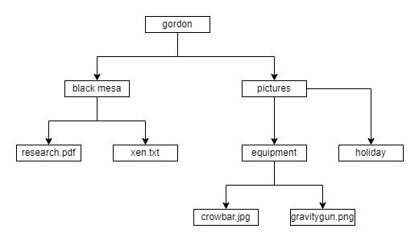

Getting started
The main class is PathTree and provides 5 different categories of functionalities:
Generate the structure of PathNodes (at tree initialization)
Different types of iteration on the nodes (e.g. depth-first, breadth-first)
Computation of different types of custom properties (e.g. bottom-up, top-down)
Pruning of part of the trees
Exporting in csv and Excel
For the sake of the following example, suppose the directories are organized as follow.
Generate the tree
The initialization of the tree generate all the nodes and requires only the root.
>>> from pathtreelib import PathTree
>>> tree = PathTree("gordon")
Node iterators
Classic breadth-first and depth-first iterators are implemented. Breadth-first is used as default iterator in __iter__.
>>> for node in tree.breadth_first_iter():
>>> print(node.path.as_posix())
gordon
gordon/black mesa
gordon/pictures
gordon/black mesa/research.pdf
gordon/black mesa/xen.txt
gordon/pictures/equipment
gordon/pictures/holiday
gordon/pictures/equipment/crowbar.jpg
gordon/pictures/equipment/gravitygun.png
>>> for node in tree.depth_first_iter():
>>> print(node.path.as_posix())
gordon
gordon/black mesa
gordon/black mesa/research.pdf
gordon/black mesa/xen.txt
gordon/pictures
gordon/pictures/equipment
gordon/pictures/equipment/crowbar.jpg
gordon/pictures/equipment/gravitygun.png
gordon/pictures/holiday
An additional iterator, based on breadth-first, allows to skip subtrees that does not satisfy a specific condition.
>>> valid_func = lambda node: node.path.property[PathTreeProperty.DEPTH] < 3
>>> for node in tree.validated_iter(valid_func):
>>> print(node.path.as_posix())
gordon
gordon/black mesa
gordon/black mesa/research.pdf
gordon/black mesa/xen.txt
gordon/pictures
gordon/pictures/equipment
gordon/pictures/holiday
Property computation
The supported properties are classified by the type of algorithm used for the computation. Currently the library supports three types of properties: bottom-up properties, top-down properties, and individual properties. The properties are computed on all the nodes and require computation functions.
Bottom-up properties
Bottom-up properties are computed on the children first and then on the parent, hence are computed from the leaves upward. An example of this kind of properties is the height.
The computation requires the function to compute the property on a leaf
>>> def leaf_func(leaf:PathNode) -> int:
>>> return 0
and the function to compute the property on an inode, assuming it is already computed on its children,
>>> def inode_func(inode:PathNode, children:list[PathNode]) -> int:
>>> children_min_height = min([child.property["height"] for child in children])
>>> return children_min_height + 1
then the property computation function ensures that the property is computed on the nodes in the correct order.
>>> tree.compute_bottom_up_property("height", leaf_func, inode_func)
>>> print(tree.root.property["height"])
2
Top-down properties
Top-down properties are computed on the parent first and then on the children, hence are computed from the root downward. An example of this kind of property is the depth.
The computation requires the function to compute the property on the root
>>> def root_func(root:PathNode) -> int:
>>> return 0
and the function to compute the property on all other nodes, assuming it is already computed on its parent,
>>> def notroot_func(node:PathNode, parent:PathNode) -> int:
>>> return 1 + parent.property["depth"]
then the property computation function ensures that the property is computed on the nodes in the correct order.
>>> tree.compute_top_down_property("depth", root_func, notroot_func)
>>> print(tree.root.property["depth"])
0
Individual properties
Individual property are computed on a node independently from the others, hence the order of the computation is irrelevant. An example of this kind of property is a flag indicating if the node’s path is a directory.
The computation requires the function to compute the property on a generic node
>>> def property_func(node) -> bool:
>>> return node.path.is_dir()
then the property computation function applies the property on all the nodes.
>>> tree.compute_individual_property("is_dir", property_func)
>>> print(tree.root.property["is_dir"])
True
Property removal
The properties can also be removed from all nodes of the tree.
>>> tree.remove_property("height")
Pruning
The pruning allows to reduce the nodes in the tree by removing subtrees that do not satisfy a specific condition. The removal of the nodes can be physical, links removed from the nodes, or logical, properties added to the node.
An example of condition is a limit on the depth.
>>> keep_condition = lambda node: node.property[PathTreeProperty.DEPTH] <= 2
The logical pruning add the pruning propery but does not change the structure of the tree and is reversable.
>>> tree.logical_pruning(keep_condition=keep_condition)
>>> print(len(list(node for node in tree)))
9
>>> print(len(list(node for node in tree if not node.property[PathTreeProperty.PRUNED])))
7
The physical pruning removes the links between nodes, hence the structure of the tree changes irreversibely.
>>> tree.physical_pruning(keep_condition=keep_condition)
>>> print(len(list(node for node in tree)))
7
Export
The tree can be exported in csv and Excel format allowing a set of customization. With basic setting, the export includes the path and the properties, however it is possible to filter on the properties and an the nodes.
>>> tree.to_csv(csvfile="test.csv", properties["heigth", "depth", "is_dir"])
>>> tree.to_excel(csvfile="test.xlsx", properties["heigth", "depth", "is_dir"])
Export
Analysis of the whole C volume in Windows to find the most space consuming folders with holiday pictures (folders with a large number of jpg files).
# Generate the whole tree (could take a while if the volume is large)
tree = PathTree("C:/")
# Compute on each node the number of picture in its subtree
tree.compute_bottom_up_property(
"num_of_jpg",
leaf_func=lambda leaf: 1 if leaf.path.suffix == '.jpg' else 0,
inode_func=lambda inode, children: sum([child.property["num_of_jpg"] for child in children])
)
# Keep only the subtrees of interest (that have at least 10 pics)
tree.physical_pruning(keep_condition=lambda node: node.property["num_of_jpg"] > 10)
# The nodes that are now leaves are the photo directories we are looking for
tree.compute_individual_property("photo_dir", lambda node: len(node.children) == 0)
# Find the 3 largest photo directories
photo_dirs = [
node
for node in tree
if node.property["photo_dir"]
]
photo_dirs.sort(key=node.property[PathTreeProperty.SIZE], reverse=True)
print("The 3 largest photo directories:", photo_dirs[:3])
# Export all the photo directories with the main information to csv
tree.to_csv(
"large_photo_dirs",
properties=["num_of_jpg", PathTreeProperty.SIZE],
node_condition=lambda node: node.property["photo_dir"]
)